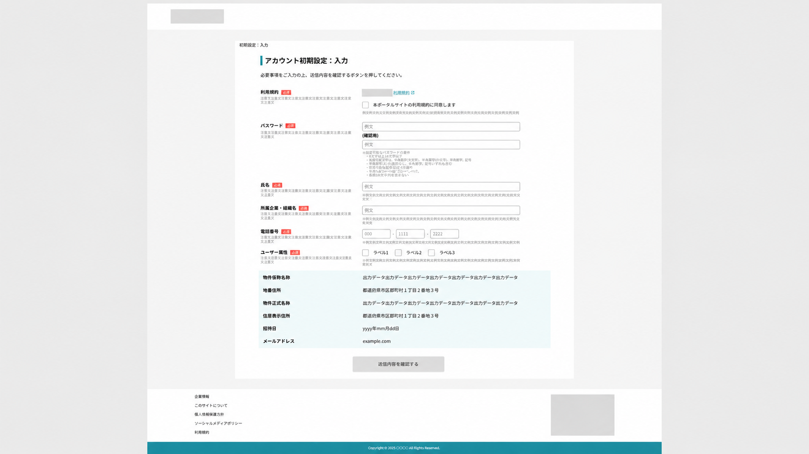
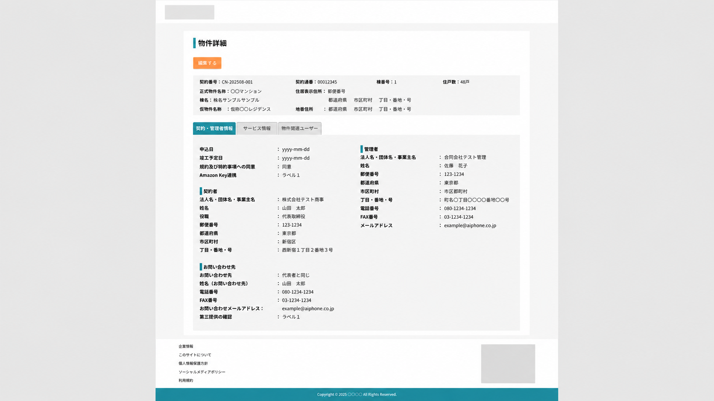
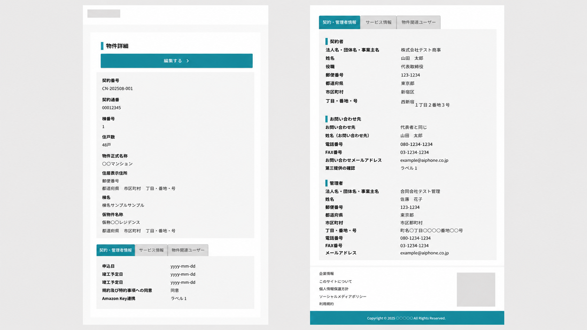

ポータルサイトデザイン
インターフォン会社の新製品の社内管理及び利用者向けの管理ポータルサイトのデザインです。
情報量が多くなってしまう画面が多いため情報を整理したりスマートフォンでも見やすい設計にしました。




インターフォン会社の新製品の社内管理及び利用者向けの管理ポータルサイトのデザインです。
情報量が多くなってしまう画面が多いため情報を整理したりスマートフォンでも見やすい設計にしました。


